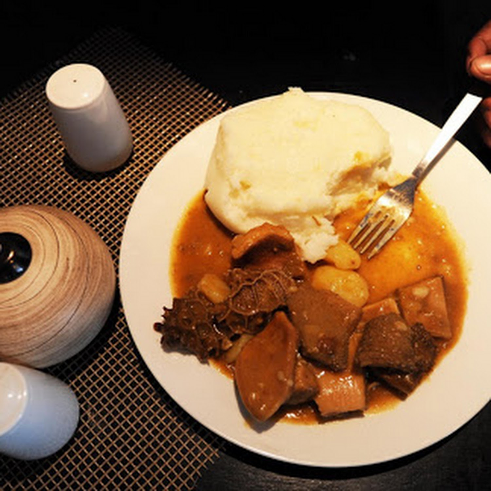

Pap and Vleis

Ingredients
- 750 ml water
- A pinch of salt
- 350 g maize meal
- 2 T butter
- 5 T soya sauce
- 5 T teriyaki sauce
- 200 g think beef strips
- 1 onion, thinly sliced
- 2 garlic cloves, crushed
- 1 x 10 cm piece ginger, peeled and grated
- Freshly ground black pepper, to taste
- 125 ml sweet chilli sauce
- 2 spring onions, sliced
Steps
- In a medium-sized saucepan, bring the water and salt to a rapid boil. Add half the maize meal, reduce the heat to medium, cover and cook for 8 minutes. Stir the mixture and add the remaining maize meal, a little at a time.
Stir and beat it against the sides of the saucepan with the back of the wooden spoon. This should take about 5 minutes.
- Reduce the heat further, cover and cook for 10 to 15 minutes. Add the butter and mix. Remove from the heat and cool slightly.
Press two spoonfuls of pap into each cup of a greased muffin tray to create a basket or cup-like shape. Set aside.
Marinate the beef strips in half the soya and teriyaki sauces for 10 minutes.
- In a large frying pan, heat the oil and sauté the onion, garlic and ginger for a minute. Add the marinated beef strips, season with pepper and stir-fry for 3 minutes, or until browned and cooked through.
Add the remaining soya and teriyaki sauces, sweet chilli sauce and spring onion and cook for 2 minutes. Fill the pap baskets and serve immediately.